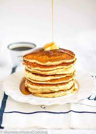

<link rel="stylesheet" type="text/css" href="style.css">
<DOCTYPE html>
    <html>
    <head>
        <meta charset="utf-8"
        <link rel="stylesheet" type="text/css" href="style.css">
        <title>How to make eggless pancakes </title>

    </head>
    <body>
    <div class= "background">
        <h2>How to make Eggless Pancakes</h2>
        <h4>Ingregients:</h4>
        <table class="ingredients">
            <tr>
                <td></td>
                <td>
                    <ul>
                        <li>1 Cup All Purpose Flour
<li>1 Teaspoon Sugar
<li>1/4 Teaspoon Ground Cinnamon
<li>2 Teaspoons Baking Powder
<li>1/4 Teaspoon Salt
<li>1 Cup Milk (I Used 2%)
<li>1 Tablespoon Vegetable Oil
<li>1 Tablespoon Water
<li>1 Teaspoon Vanilla Extract
<li>2 Tablespoons Butter

                    </ul>
                </td>
            </tr>
        </table>
        <h4>Instructions:</h4>
        <table class="instructions">
            <tr>
                <td>
                    <ul>

<li>Whisk together the dry ingredients.
<li>In a liquid measuring mug, measure 1 cup milk. To that add the vegetable oil, water and vanilla extract.
<li>Stir in the wet ingredients to the dry ingredients. Do not over-mix. Lumps are perfectly fine. Set aside for a couple of minutes.
<li>Heat a griddle at medium-high heat. Once the pan is hot add the butter and let it melt.
<li>Add the melted butter to the pancake batter and return the pan to the stove. Mix the butter into the batter.
<li>When the pan is hot enough, pour a ladleful of batter on the pan for each pancake. Cook until bubbles appear on the face of the pancake.
<li>Carefully flip the pancake and cook until its golden brown.

                    </ul>
                </td>
            </tr>
        </table>
    </div>

    </body>

    </html>